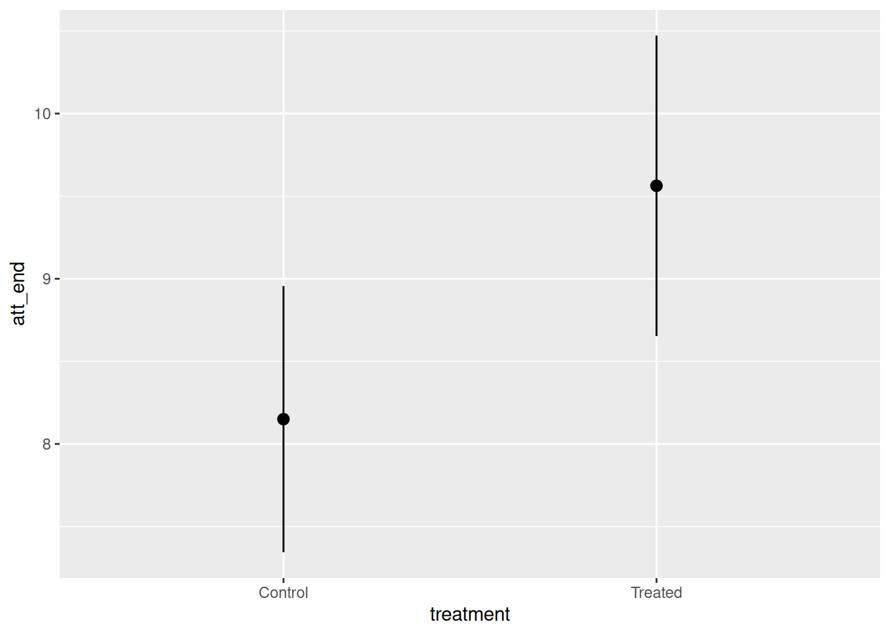
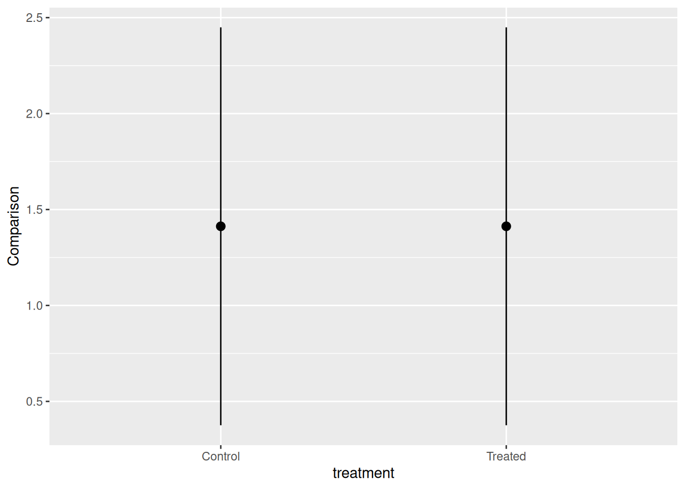

| Preceptor Table | ||
|---|---|---|
| ID |
Outcome
|
Covariate
|
| Liberal | Income | |
| 1 | 0 | 150000 |
| 2 | 0 | 50000 |
| … | … | … |
| 10 | 1 | 65000 |
| 11 | 1 | 35000 |
| … | … | … |
| N | 1 | 78000 |
In the spirit of transparency, here are the guidelines which we provide to colleagues updating chapters in the Primer and writing tutorials in this package. This is how we think data science ought to be taught. It is also, perhaps unsurprisingly, how we think data science ought to be done, at least at this introductory level. Key concepts are bolded when they are first introduced.
Introduction
The world confronts us. Make decisions we must.
Who am I and what problem am I trying to solve?
Imagine that you are running for Governor of Texas in the next election. You have a campaign budget. Your goal is to win the election. Winning the election involves convincing people to vote for you and getting your supporters to vote. Should you send postcards to registered voters likely to vote for you? What should those postcards say?
Imagine that you are in charge of ordering uniforms for bootcamp recruits in the Marine Corps for next year. There are many factors to consider: the cost of different designs, the number of male and female recruits, the distributions of heights and weights, and so on. What should you order?
Imagine that you are a historian trying to understand the 1992 US Presidential election. Who voted? Who did they vote for? Why did they vote as they did? What might have led them to vote differently?
Of course, we are never going to be able to answer all those questions. They are much too hard! But we should be able to make some progress, to learn something about the world which will help us to make better decisions.
Question
Once we have motivated the issue by imagining ourselves as a specific person facing a collection of decisions, we can move onto a broad question which, we hope, will be relevant. Examples:
How do voters respond to postcards?
How does height vary by sex?
What explains individual voting decisions in the 1992 US Presidential election?
In order to make progress, you will then drill down to a more specific question, one which specifies variables for which we actually have data. The key refinement at this stage is that we have gone from general terms to a variable with a specific definition, available in a data set to which we have access. Examples:
What is the causal effect on voting behavior of receiving a postcard which specifies which of your neighbors voted in the last election?
What is the height of young men and women in the US?
How did the likelihood of voting for Bush/Clinton/Perot in the 1992 US Presidential election vary by sex?
With specific variables, we can construct a statistical model. That statistical model can be used to answer all sorts of questions.
Of course, our data must contain the variables which allow us to answer the question, otherwise we need a new question.
Specifics help you to fix ideas as you start to work on a project. Just because you start looking for this number does not mean that we can’t consider other questions.
Your interim goal is to provide an answer to the specific question, along with your uncertainty about that answer. To calculate these, you will create a series of models, the final version of which we refer to as the data generating mechanism (DGM). Once you have the DGM, you can not only answer that specific question. You can also answer lots of similar questions, thereby allowing you to discuss the broader topic in much more detail.
Each chapter features all the same sections and sub-sections as we use below. That is, there are three sub-sections to Wisdom, four sub-sections for Justice, three for Courage and two for Temperance.
Quantity of Interest is the number that you want to estimate. It is the answer to a specific question. You will almost always calculate a posterior probability distribution for your Quantity of Interest since, in the real world, you will never know your QoI precisely. Exploring the general question will require the calculation of many Quantities of Interest.
Once we have our specific question, we can start with the Cardinal Virtues. Each section begins with a one sentence summary about the component steps of the relevant virtue. These will, obviously, be highly similar from chapter to chapter. But that is OK! We want to reinforce the steps in the path over and over again.
No battle plan survives first contact with the enemy intact. The same applies to questions and the data we use to answer them. Our questions evolve as our analysis continues. Ultimately, we can only answer some questions with the data we have. Those questions may be close to the ones with which we started, but they will rarely be identical.
Wisdom
Wisdom requires the creation of a Preceptor Table, an examination of our data, and a determination, using the concept of validity, as to whether or not we can (reasonably!) assume that the two come from the same population.
Wisdom is the first Cardinal Virtue in data science. Begin with the quantity of interest. Is that QoI a causal effect or simply a forecast? Which units and outcomes does it imply? What Preceptor Table would allow you to calculate your QoI easily? Perform an exploratory data analysis (EDA) on the data you have. Is it valid to consider the data you have and the (theoretical) data from the Preceptor Table to have arisen out of the same population? If so, you may continue. If not, your attempt to estimate your QoI ends now.
Preceptor Table
A Preceptor Table is the smallest possible table with rows and columns such that, if there is no missing data, our question is easy to answer.
Predictive Models and Causal Models are different because predictive models have only one outcome column. Causal models have more than one (potential) outcome column because we need more than one potential outcome in order to estimate a causal effect. The first step in a data science problem is to determine if your QoI requires a causal or a predictive model.
If you don’t care what Joe would have done in a counter-factual world in which he got a different treatment, if all you care about is predicting what Joe does given the treatment he received, then you just need a predictive model.
Units are determined by the original question, which also determines the QoI. They are the rows, both in the Preceptor Table and in the data.
Variables is the general term for the columns in both the Preceptor Table and the data. In fact, the term is even more general since it may refer to data vectors which we would like to have in order to answer the question but which are, sadly, not available in the data. The columns in the data are a subset of all the variables in which we might be interested.
The outcome is the most important variable. It is determined by the question/QoI. By definition, it must be present in both the data and the Preceptor Table. Different problems might be answered with the same data set, with different variables playing the role of the outcome in each case.
Covariates is the general term for all the variables which are not the outcome. As with variables, there are three different contexts in which we might use the term covariates. First, covariates are all the variables which might have some connection with our outcome, even if they are not included in the data. Second, covariates are all the variables in the data other than the outcome. Third, covariates can refer to just the subset of the variables in the data which we actually use in our model. The second usage is, obviously, a subset of the first, and the third usage is a subset of the second.
Units, outcomes and covariates are important parts of every data science model. Causal, but not predictive, models also include at least one treatment, which is just a covariate which we can, at least in theory, manipulate. The QoI determines the units and outcomes for your model.
Potential Outcome is the outcome for an individual under a specified treatment. A potential outcome is just a regular outcome in the case of a causal model. In a predictive model, we just have an outcome. It is just another variable, the one that, in the context of this problem, we are interested in explaining/modeling/predicting. In a causal model, on the other hand, there are at least two outcomes: the outcome which happens if the unit gets the treatment and the outcome which happens if that same unit gets the control. We refer to both of these outcomes as potential outcomes.
Causal Effect is the difference between two potential outcomes.
Rubin Causal Model is an approach to the statistical analysis of cause and effect based on the framework of potential outcomes.
To create the Preceptor Table, we answer a series of questions:
- Causal or predictive? Look for verbs like “cause” or “affect” or “influence.” Look for a question which implies a comparison, for a single individual unit, between two states of the world, one in which the unit receives treatment and one in which the unit gets treatment . Look for a discussion of something which we can manipulate. Remember the motto: No causation without manipulation. We look to see if the question seeks to compare two potential outcomes within the same unit, rather than the same outcome between two different units.
If none of this is present, use a predictive model. If all you need to know to answer the question is the outcome under one value of the treatment, then the model is predictive. In that case, the treatment is not truly a “treatment.” It is just a covariate. Example: What is the att_end for all women if they were to get the treatment? This is a predictive question, not a causal one, because we do not need to know the outcome under treatment and under control for any individual woman.
- What is the moment in time to which the question refers? Every question refers to a moment in time, even if that moment stretches a bit. The set of adults today is different from the set 10 years ago, or even yesterday. We need to refine the original question. Assume that we are referring to July 1, 2020 even though, in most cases, people are interested in now. We have changed the original question from:
What proportion of people who make $100,000 are liberal?
to
On July 1, 2020, what proportion of people who made $100,000 were liberal?
- What are the units? The question often makes this fairly clear, at least in terms of what each row corresponds to, whether it be individuals, classrooms, countries, or whatever. But, questions often fail to make clear the total number of the rows. Our example question above does not specify the relevant population. Is it about all the people in the world? All the adults? All the adults in the United States? The purpose of this paragraph is to refine the question, to make it more specific. Assume that we are interested in all the adults in Chicago. Our question now is:
On July 1, 2020, what proportion of the adults in Chicago who made $100,000 were liberal?
This back-and-forth between the question and the analysis is a standard part of data science. We rarely answer the exact question we started with, especially because that question is never specific enough to answer without further qualifications. Furthermore, the data we have may not allow us to answer that question, but it may be enough to answer a related question. Is that good enough for the boss/client/colleague who asked the original question? Maybe? You won’t know until you ask.
Our job as data scientists is not to simply answer the question we have been asked, but to help the questioner determine a question which can be answered with the data we have, a question which helps them to make the decisions which they face.
What are the outcomes? (If the model is causal, then there must be at least two potential outcomes. If you can’t figure them out, then the model is probably predictive.) If the model is predictive, then there is only one outcome. This paragraph does more than just name the relevant variable. It also starts the discussion about how exactly we might measure this variable. We consider both the underlying concept, “liberal,” and the process by which we might operationalize the concept. Perhaps we are using a written survey with a YES/NO answer. Perhaps it is an in-person interview with a 1-7 Likert scale, in which answers of 1 or 2 are coded, by us, as “liberal.” The details may or may not matter, but we at least need to discuss the issue.
What are the covariates? Discussing covariates in the context of the Preceptor Table is different than discussing covariates in the context of the data. Recall that the Preceptor Table is the smallest possible table, so we don’t need to include every relevant variable. We only need to discuss variables that are necessary to answer the question.
What are the treatments, if any? (There are no “treatments” in predictive models. There are only covariates.) A treatment is a covariate which, at least in theory, we can manipulate and the manipulation of which is necessary to answer our question.
With all the above, create the Preceptor Table. In this case, our Preceptor Table includes N rows, one for every adult in Chicago on July 1, 2020. It includes two columns: the outcome (liberal) and a single covariate (income).
If we have the Preceptor Table, with no missing data, then it is trivial to calculate the percentage of adults (who make more than $100,000) who are liberal.
The Preceptor Table is, really, not the smallest possible table which solved your problem. That would be a table with a single cell containing the quantity of interest! This is, obviously, stupid. The Preceptor Table is the smallest possible table, with rows corresponding to units about which we have some information, which allows us to answer the question.
EDA
You can never look at the data too much. – Mark Engerman
There is always a short section devoted to exploratory data analysis. Each EDA will include at least one textual look at the data, usually using summary(), but with skim(), glimpse(), print() and slice_sample() also available. It will also include at least one graphic, almost always with the outcome variable on the y-axis and one of the covariates on the x-axis. The data set will often include columns and rows which are irrelevant to the question. Those columns and rows are removed, creating a tibble which will be used in the Courage section. The name of that tibble will often be something convenient like ch_7.
It also makes sense to include some discussion about where this data comes from. What are the definitions of the variables? Who chose the sample? Where is the documentation? This sort of background sets the stage for examining validity.
Validity
Validity is the consistency, or lack thereof, in the columns of your data set and the corresponding columns in your Preceptor Table.
In order to consider the two data sets to be drawn from the same population, the columns from one must have a valid correspondence with the columns in the other. Validity, if true (or at least reasonable), allows us to construct the Population Table, which is the first step in Justice.
Validity discussions always have one (short) paragraph about each relevant variable (the outcome and any relevant covariates), with examples of why validity might not hold. Validity discussion finishes with a brief discussion along the lines of: “Despite these concerns, we will assume that validity does hold.”
These section can be longer of course, depending on how many details you discussed during the EDA. The central point is that we have two (potentially!) completely different things: the Preceptor Table and the data. Just because two columns have the same name does not mean that they are the same thing. Indeed, they will often be quite different! But because we control the Preceptor Table and, to a lesser extent, the original question, we can adjust those variables to be “closer” to the data that we actually have. This is another example of the iterative nature of data science. If the data is not close enough to the question, then we check with our boss/colleague/customer to see if we can modify the question in order to make the match between the data and the Preceptor Table close enough for validity to hold.
We conclude the Wisdom section by summarizing how we hope to use the data we have to answer the question we started with. Example:
Using data from a 2012 survey of Boston-area commuters, we seek to understand the relationship between income and political ideology in Chicago and similar cities in 2020. In particular, what percentage of individuals who make more than $100,000 per year are liberal?
Note how the specific question has morphed into a general examination of the “relationship” between income and political ideology. In order to answer any specific question, we always have to examine a more general relationship. We always have to build a model. We can then use this model to answer both the question we started with as well as other related questions.
By thinking hard about the original question and the data, we have come up with a question which may be possible to answer with the data we have. Note that each Cardinal Virtue section finishes with a sentence or two summarizing what you have learned. Those sentences are combined at the end of the analysis. One of the key products of a data science project is a paragraph which summarizes the key conclusions.
Justice
Justice concerns four topics: the Population Table, stability, representativeness, and unconfoundedness.
Justice is the second Cardinal Virtue in data science. Justice starts with the Population Table – the data we want to have, the data which we actually have, and all the other data from that same population. Each row of the Population Table is defined by a unique unit/time combination. We explore three key issues. First, does the relationship among the variables demonstrate stability, meaning is the model stable across different time periods? Second, are the rows associated with the data and, separately, the rows associated with the Preceptor Table, representative of all the units from the population? Third, for causal models only, we consider unconfoundedness.
Population Table
The Population Table includes a row for each unit/time combination in the underlying population from which both the Preceptor Table and the data are drawn.
The Population Table can be constructed if the validity assumption is (mostly) true. It includes all the rows from the Preceptor Table. It also includes the rows from the data set. It usually has other rows as well, rows which represent unit/time combinations from other parts of the population.
If validity holds, then we can create a Population Table.
| Population Table | ||||
|---|---|---|---|---|
| Source | Year |
Outcome
|
Covariates
|
|
| Income | Age | City | ||
| … | … | … | … | … |
| Data | 2012 | 150000 | 43 | Boston |
| Data | 2012 | 50000 | 52 | Boston |
| … | … | … | … | … |
| … | … | … | … | … |
| Preceptor Table | 2020 | … | … | Chicago |
| Preceptor Table | 2020 | … | … | Chicago |
| … | … | … | … | … |
The “Source” column highlights that the Population Table includes three categories of rows: the data, the Preceptor Table, and the rest of the population, from which both the data and the Preceptor Table are drawn. The
...indicates rows from the population which are not included in either the data or the Preceptor Table.The “ID” column is implicit, and often not included. After all, it should be obvious that each row refers to a specific unit. If we don’t really care about the individual units, there is no need to label them.
There should always be a column, in this case “Year,” which indicates the moment in time at which the covariates were recorded. A given unit may appear in multiple rows, with each row providing the data at a different time. In this example, we will have a row for Sarah in 2012, when she was 43, and a row for Sarah in 2020, when she was 51, and so on. Note that Sarah might just be a member of the population, neither in the data we have nor in the Preceptor Table. Or she might be in one or the other. We are rarely concerned with any specific individual.
Each row in the Population Table represents a unique Unit/Time combination.
The “Outcome” column is the variable which we are trying to understand/explain/predict. There is always an outcome column, although it will often just be labelled with the variable name, as here with “Income.”
The “Covariates” are all the columns other than those already discussed.
Stability
Stability means that the relationship between the columns in the Population Table is the same for three categories of rows: the data, the Preceptor Table, and the larger population from which both are drawn.
If the assumption of stability holds, then the relationships between the columns in the Population Table is the same across time. First, the relationship among columns from the same moment in time as the data is the same as the relationship among columns for the entire table. Second, the relationship among columns from the same moment in time as the Preceptor Table is the same as the relationship among columns for the entire table.
Stability, if true, allows is us to go from the data to the population, and from the population to the Preceptor Table.
We discuss at least one example of why stability might not hold in this case. These examples are almost always connected to the passage of time. Whatever the relationship between political ideology and income that might have held in 2012, when we gathered our data, might not be true either before or afterwards. Provide specific speculations about what might have changed in the world.
Regardless of those concerns, we always conclude that, although the assumption of stability might not hold perfectly, the world is probably stable enough over this time period to make inference possible.
The longer the time period covered by the Preceptor Table (and the data), the more suspect the assumption of stability becomes.
Representativeness
Representativeness, or the lack thereof, concerns two relationships among the rows in the Population Table. The first is between the data and the other rows. The second is between the other rows and the Preceptor Table.
Ideally, we would like both the Preceptor Table and our data to be random samples from the population. If so, then the assumption of representativeness is met. Sadly, this is almost never the case.
Stability looks across time periods. Representativeness looks within time periods.
We mention specific examples of two potential problems. First, is our data representative of the population? Rarely! Second, are the rows associated with the Preceptor Table representative of the population? Again, almost never!
Provide specific examples of how a lack of representativeness might be a problem, one large enough to affect your ability to answer the question.
But, to continue the analysis, we always assume/pretend that the rows from both the data and the Preceptor Table are representative enough of the relevant time period from within the larger population from which both are drawn.
Unconfoundedness
Unconfoundedness means that the treatment assignment is independent of the potential outcomes, when we condition on pre-treatment covariates. A model is confounded if this is not true.
This assumption is only relevant for causal models. We describe a model as “confounded” if this is not true. The easiest way to ensure unconfoundedness is to assign treatment randomly.
If the model is predictive, then unconfoundedness is not a concern. Just mention that fact in a sentence at the end of the section on representativeness. But, if the model is causal, then we need a section devoted to this topic.
If treatment assignment was random, then unconfoundedness is guaranteed, although experienced researchers often worry about the exact process involved in such “random” assignment. If, however, treatment assignment was not random, then there will always be a concern that it is correlated with potential outcomes. Discuss at least two scenarios in which this might be a concern. But then, as usual, conclude that, although there might be some issues with confoundedness, they are probably small enough to not worry about.
Just because Wisdom points us toward a Population Table with rows does not mean we need to keep all rows, especially if creating a model which covers all rows is hard/impossible. We can just simplify the claims we are making about the world by removing some rows. Getting rid of rows will usually necessitate an adjustment to the question we are trying to answer. Again, data science is an iterative process.
The Justice section concludes with a sentence or two about how, despite any problems with the core assumptions of stability, representativeness and unconfoundedness, we can still proceed to next steps because the assumptions hold enough.
The last step is to revisit the key sentences from the Wisdom section. Recall:
Using data from a 2012 survey of Boston-area commuters, we seek to understand the relationship between income and political ideology in Chicago and similar cities in 2020. In particular, what percentage of individuals who make more than $100,000 per year are liberal?
Are these sentences still correct, or does a serious consideration of the assumptions of stability, representativeness and unconfoundedness require us to modify them? The answer, of course, is that the assumptions are never perfect! So, we have an obligation to add a sentence or two which highlights (no more than) one or two concerns. Examples:
There is some concern that survey participants may not be perfectly representative of the underlying population.
The relationship between income and ideology may have changed over that eight year period.
There is no need to use technical terms like “stability.” However, most readers will understand what “representative” means. The key point is honesty. We have an obligation to at least mention some possible concerns. Our new paragraph:
Using data from a 2012 survey of Boston-area commuters, we seek to understand the relationship between income and political ideology in Chicago and similar cities in 2020. In particular, what percentage of individuals who make more than $100,000 per year are liberal? The relationship between income and ideology may have changed over that eight year period.
Courage
Courage starts with math, explores models, and then creates the Data Generating Mechanism.
Courage is the third Cardinal Virtue in data science. Justice gives us the Population Table. Courage creates the data generating mechanism. We first specify the mathematical formula which connects the outcome variable we are interested in with the other data that we have. We explore different models. We need to decide which variables to include and to estimate the values of unknown parameters. We check our models for consistency with the data we have. We avoid hypothesis tests. We select one model, the data generating mechanism.
Courage begins by a discussion of the functional form we will be using. This is usually straight-forward because it follows directly from the type of the outcome variable: continuous means a linear model, two categories (binary) implies logistic, and more-than-two categories suggests multinomial logistic. We provide the mathematical formula for this model, using y and x as variables. We don’t yet know the number of right-hand side variables to include, much less which ones. So, the formula is generic.
The rest of the discussion is broken up into three sections: “Models,” “Tests,” and “Data Generating Mechanism.”
Models
When exploring different models, we need to decide which variables to include and to estimate the values of unknown parameters. We estimate the models and then print out the model results. We do not give another version of the math, or use tbl_regression() yet. The goal is to explore and interpret different models.
If a parameter’s estimated value is more than 2 or 3 standard errors away from zero, we generally keep that parameter (and its associated variable) in the model. This is, probably, a variable which “matters.” The main exception to this rule is a parameter whose value is so close to zero that changes in its associated variable, within the general range of that variable, can’t change the value of the outcome by much.
Depending on the chapter, we will use different tools to choose among the different possible models.
Interpreting Parameters
Interpreting the meaning of parameter estimates takes practice. Consider a simple linear model.
linear_reg(engine = "lm") |>
fit(att_end ~ sex + treatment + age, data = trains) |>
tidy(conf.int = TRUE, digits = 2) |>
select(term, estimate, conf.low, conf.high)# A tibble: 4 × 4
term estimate conf.low conf.high
<chr> <dbl> <dbl> <dbl>
1 (Intercept) 9.58 7.51 11.6
2 sexMale -0.829 -1.86 0.207
3 treatmentTreated 1.41 0.364 2.46
4 age -0.0143 -0.0572 0.0286Let’s go through some example Q&A, followed by commentary:
Q: Write a sentence interpreting the -0.83 estimate for sexMale.
A: When comparing men with women, men have a 0.83 lower value for att_end, meaning that they are more liberal about immigration, relative to women, conditional on the other variables in the model.
Whenever we consider non-treatment variables, we must never use terms like “cause,” “impact” and so on. We can’t make any statement which implies the existence of more than one potential outcome based on changes in non-treatment variables. We can’t make any claims about within row effects. Instead, we can only compare across rows. Always use the phrase “when comparing X and Y” or something very similar.
The phrase “conditional on the other variables in the model” is important. It could be shortened to “conditional on the model.” This phrase acknowledges that there are many, many possible models, just considering all the different combinations of independent variables we might include. Each one would produce a different coefficient for sexmale. None of these is the true coefficient. Any claim we make about -0.83, or any specific number, is always conditional on the fact that we assume that this model is true, that these covariates, and no others, belong in the regression. Does that mean that we always use the phrase? No. We leave it out all the time. But it is always understood to be there by knowledgeable readers.
Q: Write a sentence interpreting the confidence interval for sexMale.
A: We do not know the true value for the coefficient for sexMale, but we can be 95% confident that it lies somewhere between -1.86 and 0.21.
Because we are Bayesians, we believe that there is a true value and that the confidence or credible or uncertainty interval includes it at the stated level.
Most of the time parameters in a model have no direct relationship with any population parameter in which we might be interested. This is especially true in complex and/or non-linear models. That is, in those cases, a coefficient like does not “mean” anything. But, in simple, small, linear models, it sometimes happens that a parameter does correspond to something real. In this case, the coefficient of sexmale is the difference between the population average of att_end for men and women, adjusting for the other variables in the model.
Q: Interpret the 1.41 estimate for treatmentTreated.
A: If this is a causal model, then the average causal effect of receiving the treatment of hearing Spanish-speakers on the train platform, relative to the control, is to have a 1.41 higher value for att_end, meaning that the treatment, relative to the control, makes one more conservative about immigration.
A: If this is a predictive model, then, if we compare people who receive the treatment with people who receive the control, the treated people have, on average, a 1.41 more conservative attitude toward immigration, adjusting for other individual characteristics.
The interpretation of a treatment variable is very different than the interpretation of a standard covariate. The key point is that there is no such thing as a causal (versus preditive) data set nor a causal (versus predictive) R code formula. You can use the same data set (and the same R code!) for both causal and predictive models. The difference lies in the assumptions you make.
Q: Interpret the 0.36 to 2.46 interval for the treatmentTreated coefficient.
A: Our best estimate for the average causal effect is 1.41, meaning that being treated makes someone 1.41 units more conservative about immigration. Yet, the true value could be lower or higher. We are 95% certain that the true effect is somewhere between 0.36 to 2.46.
Q: Interpret the -0.01 estimate for age.
A: If we compare one group of people ten years older than another, the older group will, on average, have an attitude toward immigration 0.1 unit lower, i.e., less conservative.
Numeric variables are harder than binary variables because there are no longer just two well-defined groups to compare with each other. We must create those two groups ourselves. Fortunately, as long as there are no interaction terms, we can just pick two groups with any values for the variable. The most common two groups differ by one unit of the variable. But it is quite common to use groups which differ by more/less if doing so seems sensible and/or if it makes the math easier. In this case, two groups which differ by 10 years makes sense for both reasons.
What about non-linear models, or linear models with lots of interaction terms?
logistic_reg(engine = "glm") |>
fit(as.factor(arrested) ~ sex + race, data = stops) |>
tidy(conf.int = TRUE) |>
select(term, estimate, conf.low, conf.high)# A tibble: 7 × 4
term estimate conf.low conf.high
<chr> <dbl> <dbl> <dbl>
1 (Intercept) -2.56 -2.69 -2.44
2 sexmale 0.368 0.352 0.385
3 raceblack 1.19 1.07 1.31
4 racehispanic 0.805 0.674 0.939
5 raceother 0.337 -0.0537 0.700
6 raceunknown -0.0824 -0.262 0.0965
7 racewhite 0.928 0.806 1.05 With a linear model, all these interpretations are fairly straightforward. With any other type of model, the math is too difficult to do in your head. You can’t just look at a coefficient of 5 and know what it means in magnitude. But you can tell the direction, that a positive 5 means that higher values of the covariate are associated with higher values of the outcome variable. So, with anything other than linear models, we restrict ourselves to direction and significance interpretations.
Q: Write a sentence interpreting the 0.37 estimate for sexmale.
A: In comparison with women, men are more likely to be arrested.
Categorical variables (with categories), like sex (with two values), are always replaced with () 0/1 dummy variables like sexMale.
We can’t (easily) know how big 0.37 is. Because the model is non-linear, you can’t (easily) determine whether men are 1% or 50% more likely to be arrested.
Q: Write a sentence interpreting the 1.07 to 1.31 confidence interval for raceblack.
A: In comparison with Asian/Pacific Islanders, Blacks are more likely to be arrested. In fact, they are more likely to be arrested than any other racial group.
Dummy variables must always be interpreted in the context of the base value for that variable, which is generally included in the intercept. For example, the base value here is “asian/pacific islander.” (The base value is the first alphabetically by default for character variables. However, if it is a factor variable, you can change that by setting the order of the levels by hand.)
We look for two things in the confidence interval. First, does it exclude zero? If not, then we can’t be sure if the relationship is positive or negative. Second, does it overlap with the confidence intervals for other dummy columns derived from this variable? If so, then we can be sure that the ordering as to which comparisons are bigger. If there is overlap, as for example between raceother and raceunknown, we can’t be sure how the average comparison would go. Because the estimate for raceother is larger than the estimate for raceunknown, our best guess is that members of the former group are more likely to be arrested. But, because the confidence intervals overlap, there is a good chance (more than 5% certainly) that the ordering is the opposite.
We recommend the verb “adjust” in place of “control” when discussing the effect of including other variables in the model. Example: “The causal effect of exposure to Spanish-speakers is 1.5, adjusting for other variables like age and party.” The word “adjusting” is better than the word “controlling” because it demonstrates some humility.
The more advanced our models, the less relevant are these sorts of interpretations. After all, we don’t really care about parameters, much less how to interpret them. Parameters are imaginary, like unicorns. We care about answers to our questions. Parameters are tools for answering questions. They aren’t interesting in-and-of themselves. In the modern world, all parameters are nuisance parameters.
Tests
We check our models for consistency with the data we have using posterior predictive testing. We avoid hypothesis tests.
Data Generating Mechanism
Data Generating Mechanism (DGM) is also called the data generating model or the data generating process. The true DGM is the reality of the world, the physical process which actually generates the data which we observe. The estimated DGM is the mathematical formula we create which models the true DGM, which we can never know. In Temperance, we will use the estimated DGM to draw inferences about our Quantities of Interest.
We create a final model, the data generating mechanism. We provide the math for this model, using variable names instead of y and x as we did at the start of the chapter. We present the final parameter estimates nicely, using the gtsummary package.
The model you have made by the end of Courage is almost always too complex to answer the simple question you started with, because the question rarely specifies the values of all the covariates which are included in the model. But any covariates or treatments which are part of the initial question(s) must be included in the model, otherwise we can’t answer any questions about them at all.
The DGM section ends with a clear statement in English, in its own paragraph, describing the model. That is, what are the two sentences which a student would say at a presentation describing the model. The first sentence specifies the model, including making clear the units, outcome and key covariates. (No need to use the terms “units,” “outcomes,” and so on.) The second sentence tells us something about the model, generally the relationship between one of the covariates and the outcome variable. In general, there is no discussion of specific numbers or their uncertainty. First, who cares? Parameter estimates are boring and irrelevant. Second, the Temperance section is where we answer the original question. Example:
We modeled being liberal, a binary TRUE/FALSE variable, as a logistic function of income. Individuals with higher income were more likely to be liberal.
Update our concluding paragraph with this addition:
Using data from a 2012 survey of Boston-area commuters, we seek to understand the relationship between income and political ideology in Chicago and similar cities in 2020. In particular, what percentage of individuals who make more than $100,000 per year are liberal? The relationship between income and ideology may have changed over that eight year period. We modeled being liberal, a binary TRUE/FALSE variable, as a logistic function of income. Individuals with higher income were more likely to be liberal.
Feel free to use “I” instead of “We” if the project is solo.
Temperance
Temperance uses the Data Generating Mechanism to answer the questions with which we began. Humility reminds us that this answer is always a lie. We can also use the DGM to calculate many similar quantities of interest, displaying the results graphically.
Temperance is the fourth Cardinal Virtue in data science. Courage gave us the data generating mechanism. Temperance guides us in the use of the DGM — or the “model” — we have created to answer the questions with which we began. We create posteriors for the quantities of interest. We should be modest in the claims we make. The posteriors we create are never the “truth.” The assumptions we made to create the model are never perfect. Yet decisions made with flawed posteriors are almost always better than decisions made without them.
The two sub-sections of Temperance are: Questions and Answers, and Humility.
It is important to monitor our language. We do not believe that changes in election_age “cause” changes in lived_after. That is obvious. But there are some words and phrases — like “associated with” and “change by” — which are too close to causal. Be wary of their use. Always think in terms of comparisons when using a predictive model. We can’t change election_age for an individual candidate. We can only compare two candidates (or two groups of candidates).
Questions and Answers
We go back to the question(s) with which we started the journey. We discuss how that question has evolved, in a back-and-forth process by which we try to ensure that the data we have and the question we ask are close enough to make the process plausible.
We revisit the Preceptor Table, at least conceptually. We emphasize that the DGM allows us to fill in missing outcomes in the Preceptor Table, thereby allowing us to answer our questions.
Key issue is the connection between the DGM (either true or estimated) and the Preceptor Table. The connection is tricky! Not even sure I understand it. The DGM can be used to “fill in” all the missing elements of the Preceptor Table, but there will always be some associated uncertainty. Even with the true DGM, we don’t know what att_end Joe would have had under treatment, we just have a posterior for that variable, a way to make draws.
Idea: Use the DGM to create one complete Preceptor Table. In that draw, Joe is a 6 for att_end. Then, do another draw. Joe is a 5. Do a thousand draws. You then have a thousand Preceptor Tables. Calculate the Quantity of Interest for each Preceptor Table. The 1,000 values are the posterior for your QoI.
Would be great to make a cool animation of this, perhaps with a simple example. Would be fun to have a similar animation for each chapter. Great summer project!
We use the data generating mechanism from Courage to answer the question. This is, obviously, the core of the Temperance section.
Plots from marginaleffects
We walk the student through several plots created with the marginaleffects package. The plots are generally increasing in complexity. We always tell the student which plot to create by giving them the exact code. If possible, the knowledge drop tries to connect the plot to the table of regression results we interpreted above. Example:
fit_attitude <- linear_reg(engine = "lm") |>
fit(att_end ~ sex + treatment + age, data = trains)Example 1
plot_predictions(fit_attitude,
condition = "sex")This plot shows the expected value of attitudes toward immigration, conditional on the model, for women and men. Women have higher (more conservative) attitudes toward immigration, adjusting for age and treatment. This is consistent with the negative estimated coefficient for sexMale of -0.83.
Example 2
plot_predictions(fit_attitude,
condition = "treatment")
This plot shows the expected value of attitudes toward immigration, conditional on the model, for those exposed to treatment (Spanish-speakers on the train platform) and control. Treated individuals have higher (more conservative) attitudes toward immigration, adjusting for age and sex This is consistent with the positive estimated coefficient for treatmentTreated of 1.41.
Example 3
plot_predictions(fit_attitude,
condition = "age")This plot shows the expected value of attitudes toward immigration, conditional on the model, for individuals of different ages. Younger people have higher (more conservative) attitudes toward immigration, adjusting for treatment and sex This is consistent with the negative estimated coefficient for age of -0.01.
Example 4
plot_predictions(fit_attitude,
condition = c("treatment", "age", "sex"))This plot shows the expected value of attitudes toward immigration, conditional on the model, for individuals of different treatment assignments, ages and sexes.
We are often just as interested in comparisons as we are in predictions. It is tempting to think that we can deduce comparisons by just subtracting one prediction from another. This mostly works for the center of the distribution but it definitely does not work for the confidence interval. Fortunately, marginaleffects provides the plot_comparison() function for this purpose.
Example 5
plot_comparisons(fit_attitude,
variables = "treatment",
condition = "treatment")
This plot shows the expected value of the difference in attitudes toward immigration between Treated and Control, conditional on the model. Treated have higher (more conservative) attitudes toward immigration, adjusting for age and sex. This is consistent with the negative estimated coefficient for treatmentTreated of 1.41.
The relationship between plot_predictions() and plot_comparisons() is subtle, but the central point is that, if you want to look at the difference or ratio or any other function of more than one expected value, you must use plot_comparisons().
Further comments on plot_comparisons():
The values for the
conditionargument determine the structure of the plot. The first value is the x-axis, the second is the color and the third separates the plots into different panes.The value for the
variablesargument specifies the variable around which any comparisons are organized.If a model is not rich enough — meaning enough terms/interactions/non-linearities — there won’t be enough complexity for a complex call to
plot_comparisons().
The section always concludes with a one sentence summary of our final conclusion. This summary does not include any technical terms. It is meant for non-statisticians. It is something which we might say in explaining our take-away conclusion to a non-statistician. It will always feature at least one number, and our uncertainty associated with that number. Example:
55% ( 2%) of the people who make more than $100,000 per year are liberal.
or
Of the people making $100,000 or more per year, about 55% are liberal, although the true number could be as low as 53% or as high as 57%.
Scaling the QoI
Some cases, like these, feature numbers which have a natural interpretation. We know what percentages are. But many outcomes are measured in units which are more difficult to interpret. For example:
The causal effect of smaller class size on math exam scores was 10 points.
The reader does not know if 10 points is a big or small effect because she doesn’t know anything about the range of scores which students get on this exam. The most common approach to this problem is to “standardize” the causal effect by dividing by the standard deviation of the outcome. For example, if the standard deviation of all the math exam scores is 50, then we would re-write this as:
The standardized causal effect of smaller class size on math exam scores was 0.2.
Depending on the field, there are a variety of terms for describing a raw causal effect divided by the standard deviation, including “sigmas” — derived from the use of the Greek letter as a symbol for the standard deviation. So, we might also write:
The causal effect of smaller class size on math exam scores was 0.2 sigmas.
The raw effect size of 10 is 20% a standard deviation (50). If it were 50, we would speak instead one “one sigma” which is one standard deviation.
Another common term for this divide-by-the-standard deviation standardization is “effect size.” So:
The effect size of smaller class size on math exam scores was 0.2.
Here is another approach for tackling a problem in which the scale does not have a natural interpretation. Consider:
The causal effect of hearing Spanish-speakers is a more conservative attitude toward immigration, a change of about 1.5 ( 0.5) on a 15 point scale.
This is correct, as far as it goes, but we have no idea if 1.5 is a “big” or “small” change. We need some perspective.
The causal effect of hearing Spanish-speakers is a more conservative attitude toward immigration, a change of about 1.5 ( 0.5) on a 15 point scale. For perspective, the difference between Democrats and Republicans on that same scale is about 2.1.
Confidence/Credible/Uncertainty Intervals
Terminology is important. The best words depend on your audience. An example involves how you describe your uncertainty, the interval around your best estimate of the quantity of interest. The terminology above — 1.5 ( 0.5) — works well for a general audience. But you may want to be more precise as to the meaning of that interval. Consider some options:
95% interval of 0.5 to 1.5. The use of the word “interval,” without an associated adjective, is a way to avoid the entire debate. The meaning is almost certainly the Bayesian one: The 95% percentile range on my posterior for the true causal effect goes from 0.5 to 1.5.
95% confidence interval of 0.5 to 1.5. The adjective “confidence” is used by two different sorts of people. First are Frequentists, whose philosophy is the traditional approach to statistics and still in control at institutions like the College Board. The Frequentist meaning is that, if we followed the same approach in 100 similar problems then, 95% of the time, our confidence interval would include the true value. If you don’t understand this, don’t worry. You will never work for a Frequentist. The second sort of person who uses the adjective “confidence” is someone who is actually Bayesian, like us, but doesn’t care about annoying Frequentists.
95% credible interval of 0.5 to 1.5. The adjective “credible” is the Bayesian analogue to “confidence.” Other Bayesians who don’t want to annoy Frequentists will often replace “confidence” with “uncertainty” to be polite. But, being Bayesians, their meaning is always the same: There is a 95% chance that the true value is between 0.5 and 1.5.
The main takeaway is that the vast majority of people will not care if you use “confidence interval” or “credible interval” or “uncertainty interval.” They will interpret any of these phrases in the Bayesian way: there is an X% chance — where X is most often 95 but can take on other values — that the true value lies within the interval.
Final Paragraph
Depending on the context, you might have more than one Quantity of Interest to discuss. But there must be at least one. You are now ready to provide the entire concluding paragraph.
Using data from a 2012 survey of Boston-area commuters, we seek to understand the relationship between income and political ideology in Chicago and similar cities in 2020. The relationship between income and ideology may have changed over that eight year period. We modeled the status of having a liberal political orientation, a binary TRUE/FALSE variable, as a logistic function of income. Individuals with higher income were more likely to be liberal. Of the people making $100,000 or more per year, about 55% are liberal, although the true number could be as low as 53% or as high as 57%.
Note that we have deleted the rhetorical question — “In particular, what percentage of individuals who make more than $100,000 per year are liberal?” — from the start of the paragraph. It is no longer necessary.
The final result of data science project is a paragraph like this one. Data science begins with a question and some data. It ends with a paragraph and, ideally, some graphics.
Of course, real data science projects never involve a single question. Instead, the starting question leads you to create a DGM which can answer it but which also can answer lots and lots of other questions. Which is cool. In fact, it is often possible to create a graphic which answers lots of questions at once. That is ideal. (The Michigan postcard example is great.)
A really good data science project always ends with a cool graphic which answers lots of questions and a paragraph like the one above which picks out one answer to highlight.
The Questions and Answers section ends with that final paragraph.
Humility
Temperance guides us in the use of the DGM to answer the questions with which we began.
The Humility section always begins with single sentence, something along the lines of:
We can never know the truth.
Over time, we hope to collect a serious of quotations along this theme.
Having answered the question, we now (quickly) review all the reasons why our answer might be wrong. Review the specific concerns we had about validity, stability, representativeness, and (if a causal model) unconfoundedness. Those concerns remain.
Review the three levels of “truth”: Knowing all the entries in the Preceptor Table, knowing the true DGM, and then using our estimated DGM. (This explanation can become more sophisticated as the chapters progress.)
We can never know all the entries in the Preceptor Table. That knowledge is reserved for God. If all our assumptions are correct, then our DGM is true, it accurately describes the way in which the world works. There is no better way to predict the future, or to model the past, than to use it. Sadly, this will only be the case with toy examples involving things like coins and dice. We hope that our DGM is close to the true DGM but, since our assumption are never perfectly correct, our DGM will always be different. The estimated magnitude and importance of that difference is a matter of judgment.
The problem with our concluding paragraph is that it implies that our DGM is the truth, rather than just an imperfect approximation of the true DGM. There are two main ways in which are DGM might be wrong. First, the central portion of our estimate, 55% in this case, might be wrong. We might be biased low or high. It is hard to know what to do about that, other than to be aware.
The second way that our DGM might be wrong, relative to the true DGM, is that our uncertainty interval, the 4% from 53% to 57%, might be off. It might be too narrow or too wide. In reality, however, it is almost certainly too narrow, relative to the true DGM. Problems with our assumptions, which are inevitable, almost always make our confidence intervals too narrow.
Given these concerns, we provide a new final paragraph. This paragraph is just like the one with which we ended the Questions and Answers section, but with (perhaps) a different mean estimate and (almost always) a wider confidence interval.
In later chapters we should also estimate a different (plausible) DGM and show the answer it provides to our question. That answer will always be different than the one in the concluding paragraph. (Ideally, we choose a small change in the model which produces a large change in the estimates for the QoI.)
Last line in every chapter is always: “The world is always more uncertain than our models would have us believe.”